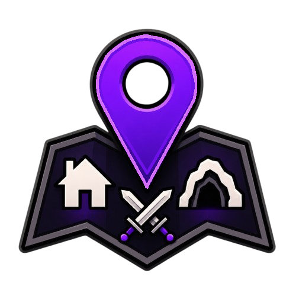

<!doctype html>
<html lang="en">
<head>
    <meta charset="utf-8">
    <meta name="viewport" content="width=device-width, initial-scale=1">
    <title>WaypointsPlus</title>
    <link rel="icon" type="image/png" href="./assets/logo.png">
    <style>
        :root {
            color-scheme: dark;
            --page: #0b0b10;
            --panel: #15151d;
            --panel-hover: #1d1d28;
            --border: #39394a;
            --accent: #ca6521;
            --text: #eeeeF3;
            --muted: #9999a8;
        }

        * { box-sizing: border-box; }

        body {
            margin: 0;
            min-height: 100vh;
            background: var(--page);
            color: var(--text);
            font: 16px/1.55 system-ui, -apple-system, BlinkMacSystemFont, "Segoe UI", sans-serif;
        }

        .layout {
            display: grid;
            grid-template-columns: minmax(230px, 300px) minmax(0, 760px);
            gap: 36px;
            width: min(1120px, calc(100% - 32px));
            margin: 0 auto;
            padding: 48px 0;
        }

        aside {
            position: sticky;
            top: 24px;
            align-self: start;
        }

        h1, h2 { line-height: 1.2; }
        h1 { margin: 0 0 6px; font-size: 25px; }
        h2 { margin: 0 0 20px; font-size: 29px; }
        h3 { margin: 26px 0 10px; font-size: 19px; }
        p { margin: 0 0 16px; }
        li { margin-bottom: 7px; }

        .brand {
            display: flex;
            align-items: center;
            gap: 10px;
            margin-bottom: 6px;
        }

        .brand img {
            width: 38px;
            height: 38px;
            object-fit: contain;
        }

        .brand h1 { margin: 0; }

        .subtitle {
            margin-bottom: 22px;
            color: var(--muted);
        }

        .languages {
            display: flex;
            gap: 8px;
            margin-bottom: 16px;
        }

        .languages a {
            color: var(--muted);
            text-decoration: none;
        }

        .languages a.active { color: var(--accent); }

        #search {
            width: 100%;
            height: 40px;
            margin-bottom: 12px;
            padding: 0 12px;
            border: 1px solid var(--border);
            border-radius: 7px;
            outline: none;
            background: var(--panel);
            color: var(--text);
        }

        #search:focus { border-color: var(--accent); }

        #results {
            display: grid;
            gap: 6px;
            max-height: calc(100vh - 240px);
            overflow-y: auto;
            scrollbar-width: thin;
            scrollbar-color: var(--border) transparent;
        }

        .article-link {
            width: 100%;
            padding: 10px 12px;
            border: 0;
            border-radius: 6px;
            background: transparent;
            color: var(--muted);
            font: inherit;
            text-align: left;
            cursor: pointer;
        }

        .article-link:hover,
        .article-link.active {
            background: var(--panel-hover);
            color: var(--text);
        }

        article {
            min-height: 260px;
            min-width: 0;
            align-self: start;
            overflow-wrap: anywhere;
            padding: 30px;
            border: 1px solid var(--border);
            border-radius: 10px;
            background: var(--panel);
        }

        footer {
            grid-column: 2;
            padding: 18px 4px 0;
            border-top: 1px solid var(--border);
            color: var(--muted);
            font-size: 13px;
        }

        footer p { margin: 0; }
        footer p + p { margin-top: 10px; }

        .empty { color: var(--muted); }

        code {
            padding: 2px 5px;
            border-radius: 4px;
            background: #242430;
            color: #ffd4b8;
        }

        article a {
            color: #ffbd8e;
            text-underline-offset: 3px;
        }

        article a:hover { color: #ffe2ce; }

        pre {
            margin: 16px 0;
            padding: 14px 16px;
            overflow-x: auto;
            border: 1px solid var(--border);
            border-radius: 7px;
            background: #101017;
            font-size: 14px;
        }

        pre code {
            padding: 0;
            background: transparent;
            overflow-wrap: normal;
        }

        .article-link:focus-visible,
        a:focus-visible {
            outline: 2px solid var(--accent);
            outline-offset: 2px;
        }

        @media (max-width: 720px) {
            .layout {
                grid-template-columns: 1fr;
                gap: 24px;
                padding: 24px 0;
            }

            aside { position: static; }
            #results { max-height: 280px; }
            article { padding: 22px; }
            footer { grid-column: 1; }
        }
    </style>
</head>
<body>
<main class="layout">
    <aside>
        <div class="brand">
            
            <h1>Waypoints Plus</h1>
        </div>
        <div class="subtitle" id="documentation-label"></div>
        <nav class="languages" aria-label="Language">
            <a href="?lang=en" data-language="en">English</a>
            <span>·</span>
            <a href="?lang=pl" data-language="pl">Polski</a>
        </nav>
        <input id="search" type="search" autocomplete="off">
        <div id="results"></div>
    </aside>

    <article id="article"></article>
    <footer id="footer"></footer>
</main>

<script>
    const articles = [
        {
            id: "getting-started",
            title: {"en":"Getting Started","pl":"Pierwsze kroki"},
            content: {
                en: `<p>Mark your base, keep track of useful places and share a meeting point with friends. Waypoints Plus keeps those locations separate for each server and singleplayer world.</p>
<h3>Your first waypoint</h3>
<ol><li>Enter a world and press <code>B</code>.</li><li>Give the waypoint a name. The coordinate fields already contain your current position.</li><li>Choose a color in its settings, then save.</li><li>Press <code>;</code> to open the waypoint manager and find your new marker.</li></ol>
<p>If those keys do something else, check the Waypoints Plus category in Minecraft Controls. Existing keybinds are kept when you update the mod. See <a href="?lang=en#controls">Controls</a> for the full list.</p>
<h3>Where to go next</h3>
<ul><li><a href="?lang=en#profiles">Profiles</a>: separate bases, allies, enemies and structures.</li><li><a href="?lang=en#fast-waypoints">Fast Waypoints</a>: turn a line of coordinates into a waypoint with one key.</li><li><a href="?lang=en#sharing">Import and Export</a>: share several locations at once.</li><li><a href="?lang=en#fight-alerts">Fight Alerts</a>: send a prepared message to your team from the game.</li></ul>
<p>The mod runs on your client. Servers do not need to install it. Install the Fabric build marked for your Minecraft version together with Fabric API.</p>`,
                pl: `<p>Zapisz bazę, zaznacz przydatne miejsca i podziel się punktem spotkania ze znajomymi. Waypoints Plus przechowuje te lokalizacje osobno dla każdego serwera i świata singleplayer.</p>
<h3>Pierwszy waypoint</h3>
<ol><li>Wejdź do świata i naciśnij <code>B</code>.</li><li>Wpisz nazwę. Pola koordynatów zawierają już Twoją aktualną pozycję.</li><li>Wybierz kolor w ustawieniach waypointa i zapisz.</li><li>Naciśnij <code>;</code>, aby otworzyć listę i znaleźć nowy znacznik.</li></ol>
<p>Jeśli te klawisze wykonują inną akcję, sprawdź kategorię Waypoints Plus w sterowaniu Minecrafta. Aktualizacja moda zachowuje wcześniej przypisane bindy. Pełną listę znajdziesz w artykule <a href="?lang=pl#controls">Sterowanie</a>.</p>
<h3>Co dalej?</h3>
<ul><li><a href="?lang=pl#profiles">Profile</a>: oddziel bazy, sojuszników, wrogów i struktury.</li><li><a href="?lang=pl#fast-waypoints">Szybkie waypointy</a>: zamień wiersz koordynatów w waypoint jednym klawiszem.</li><li><a href="?lang=pl#sharing">Import i eksport</a>: udostępnij kilka miejsc naraz.</li><li><a href="?lang=pl#fight-alerts">Alerty walki</a>: wyślij przygotowaną wiadomość do drużyny bez wychodzenia z gry.</li></ul>
<p>Mod działa po stronie gracza. Serwer nie musi go instalować. Wybierz plik Fabric przeznaczony do Twojej wersji Minecrafta i zainstaluj Fabric API.</p>`
            }
        },
        {
            id: "controls",
            title: {"en":"Controls","pl":"Sterowanie"},
            content: {
                en: `<p>All keybinds are available in Minecraft Controls under the <strong>Waypoints Plus</strong> category.</p>

<h3>Default controls</h3>
<ul>
<li><strong>Create Waypoint</strong> &lt;-- <code>B</code></li>
<li><strong>Manage Waypoints</strong> &lt;-- <code>;</code></li>
<li><strong>Previous Waypoint Profile</strong> &lt;-- <code>Left Arrow</code></li>
<li><strong>Next Waypoint Profile</strong> &lt;-- <code>Right Arrow</code></li>
<li><strong>Reload Waypoints From File</strong> &lt;-- unassigned</li>
<li><strong>Create Waypoint From Clipboard</strong> &lt;-- unassigned</li>
<li><strong>Copy Current Position</strong> &lt;-- unassigned</li>
</ul>
<p>Clipboard keybinds are explained in <a href="./index.html?lang=en#fast-waypoints">Fast Waypoints</a>.</p>
<p>Every key can be changed or removed in Minecraft Controls.</p>
<h3>Alert triggers</h3><p>Fight Alert keys are assigned inside each alert, separately from Minecraft Controls. Avoid using the same key for several enabled alerts unless you want to trigger them together.</p><p>Alert triggers are read during gameplay. Close chat and other menus before testing a keybind. <a href="?lang=en#fight-alerts">Set up a Fight Alert</a>.</p>`,
                pl: `<p>Wszystkie bindy znajdują się w sterowaniu Minecrafta w kategorii <strong>Waypoints Plus</strong>.</p>

<h3>Domyślne sterowanie</h3>
<ul>
<li><strong>Utwórz waypoint</strong> &lt;-- <code>B</code></li>
<li><strong>Zarządzaj waypointami</strong> &lt;-- <code>;</code></li>
<li><strong>Poprzedni profil waypointów</strong> &lt;-- <code>Strzałka w lewo</code></li>
<li><strong>Następny profil waypointów</strong> &lt;-- <code>Strzałka w prawo</code></li>
<li><strong>Odśwież waypointy z pliku</strong> &lt;-- nieprzypisany</li>
<li><strong>Stwórz waypoint na podstawie schowka</strong> &lt;-- nieprzypisany</li>
<li><strong>Kopiuj aktualną pozycję</strong> &lt;-- nieprzypisany</li>
</ul>
<p>Bindy korzystające ze schowka opisano w artykule <a href="./index.html?lang=pl#fast-waypoints">Szybkie waypointy</a>.</p>
<p>Każdy bind można zmienić lub usunąć w sterowaniu Minecrafta.</p>
<h3>Bindy alertów</h3><p>Klawisze alertów przypisujesz w edytorze danego alertu, osobno od sterowania Minecrafta. Nie przypisuj jednego klawisza do kilku włączonych alertów, chyba że chcesz uruchamiać je razem.</p><p>Bindy alertów działają podczas rozgrywki. Przed testem zamknij czat i inne okna. <a href="?lang=pl#fight-alerts">Konfiguracja alertu</a>.</p>`
            }
        },
        {
            id: "creating-waypoints",
            title: {"en":"Creating and Editing Waypoints","pl":"Tworzenie i edycja waypointów"},
            content: {
                en: `<p>Press <code>B</code> to mark where you are, or enter another location before saving. A name such as <strong>North gate</strong> is easier to recognize than a row of coordinates.</p>
<h3>Name and position</h3><p>The name field is focused when the form opens, so you can start typing straight away. X, Y and Z initially use your current block position. You can edit them individually or use the clipboard icon beside them to paste coordinates.</p>
<p>The incognito icon beside Paste hides those fields without changing their values. See <a href="?lang=en#incognito">Incognito Mode</a> before using it on a stream.</p>
<h3>Choose a layout</h3><p>Select <strong>Preset</strong> to open the list on the left. Choose a built-in layout or one you made in the <a href="?lang=en#preset-creator">Preset Creator</a>. If the preset uses an item icon, a square beside the name lets you choose an item for this waypoint. <a href="?lang=en#presets">More about presets</a>.</p>
<h3>Color and dimension</h3><p>Open <strong>Settings</strong> in the creation form to choose a border color, adjust opacity and select a dimension. Overworld, Nether and End have their own buttons. For a custom dimension, use the custom field and apply a valid value.</p>
<p>The selected dimension starts as the one you are currently in. If you enter coordinates from another dimension, change that selection too. See <a href="?lang=en#dimensions">Dimensions</a> for conversion examples.</p>
<h3>Editing later</h3><p>Open the manager with <code>;</code> and select <strong>Edit</strong> next to the waypoint. You can change the name, location, dimension and color there. Save to keep the changes.</p>
<p>The delete button asks for confirmation. Click it again to remove the waypoint, or choose another action to cancel.</p>`,
                pl: `<p>Naciśnij <code>B</code>, aby zaznaczyć swoją pozycję, albo wpisz inne miejsce przed zapisaniem. Nazwę <strong>Północna brama</strong> łatwiej rozpoznać niż sam ciąg koordynatów.</p>
<h3>Nazwa i pozycja</h3><p>Po otwarciu formularza pole nazwy jest aktywne, więc możesz od razu pisać. X, Y i Z początkowo wskazują Twoją pozycję blokową. Możesz zmienić każde pole osobno albo wkleić koordynaty ikoną schowka obok nich.</p>
<p>Ikona incognito obok Wklej ukrywa te pola bez zmiany ich wartości. Przed użyciem na transmisji przeczytaj opis <a href="?lang=pl#incognito">trybu incognito</a>.</p>
<h3>Wybierz wygląd</h3><p>Kliknij <strong>Szablon</strong>, aby otworzyć listę po lewej. Wybierz gotowy układ albo własny z <a href="?lang=pl#preset-creator">kreatora szablonów</a>. Jeśli szablon używa ikony przedmiotu, kwadrat obok nazwy pozwala wybrać przedmiot dla tego waypointa. <a href="?lang=pl#presets">Więcej o szablonach</a>.</p>
<h3>Kolor i wymiar</h3><p>Otwórz <strong>Ustawienia</strong> w formularzu tworzenia, aby wybrać kolor obramowania, przezroczystość i wymiar. Overworld, Nether i End mają własne przyciski. Dla niestandardowego wymiaru użyj pola własnej wartości i zatwierdź poprawny wpis.</p>
<p>Na początku wybrany jest wymiar, w którym przebywasz. Jeśli wpisujesz koordynaty z innego wymiaru, zmień również ten wybór. Przykłady przeliczania znajdziesz w artykule <a href="?lang=pl#dimensions">Wymiary</a>.</p>
<h3>Późniejsza edycja</h3><p>Otwórz listę klawiszem <code>;</code> i wybierz <strong>Edytuj</strong> obok waypointa. Możesz zmienić nazwę, pozycję, wymiar i kolor. Zapisz, aby zachować zmiany.</p>
<p>Przycisk usuwania wymaga potwierdzenia. Kliknij go ponownie, aby usunąć waypoint, albo wybierz inną akcję, aby anulować.</p>`
            }
        },
        {
            id: "incognito",
            title: {"en":"Incognito Mode","pl":"Tryb incognito"},
            content: {
                en: `<p>Incognito hides the coordinate fields while creating or editing a waypoint. It is useful when you need to open the form during a stream without showing a base location.</p>
<h3>Turn it on</h3><ol><li>Open the waypoint creation or editing form.</li><li>Click the hat-and-glasses icon to the left of the clipboard icon.</li><li>X, Y and Z now each show <code>****</code>, regardless of how long the actual number is.</li></ol>
<p>Click the icon again to reveal the numbers. It becomes brighter while incognito is active. The choice is saved immediately and stays active when you reopen the form or restart Minecraft.</p>
<h3>The coordinates stay unchanged</h3><p>Only their display is masked. The real values remain in the fields, Paste still fills them, and saving uses those values. Incognito does not replace coordinates with asterisks in your waypoint files.</p>
<h3>What it does not hide</h3><p>This is not a global privacy switch. It does not hide coordinates or distance on labels in the world, remove them from clipboard exports or alert messages, or conceal the terrain around you.</p>
<p>For recording, also turn off <strong>Coordinates</strong> and <strong>Distance</strong> in Settings and check your waypoint names. See <a href="?lang=en#privacy">Screenshot Privacy</a> for the rest of the checklist.</p>`,
                pl: `<p>Incognito ukrywa pola koordynatów podczas tworzenia i edycji waypointa. Przydaje się, gdy chcesz otworzyć formularz na transmisji bez pokazania lokalizacji bazy.</p>
<h3>Jak włączyć</h3><ol><li>Otwórz formularz tworzenia lub edycji waypointa.</li><li>Kliknij ikonę kapelusza i okularów po lewej od ikony schowka.</li><li>Pola X, Y i Z pokażą po <code>****</code>, niezależnie od długości prawdziwej liczby.</li></ol>
<p>Kliknij ikonę ponownie, aby odsłonić liczby. Przy aktywnym incognito ikona jest jaśniejsza. Wybór zapisuje się od razu i pozostaje aktywny po ponownym otwarciu formularza oraz uruchomieniu Minecrafta.</p>
<h3>Koordynaty pozostają bez zmian</h3><p>Ukryty jest tylko ich wygląd. Prawdziwe wartości nadal znajdują się w polach, Wklej nadal je uzupełnia, a zapis korzysta z tych wartości. Incognito nie zamienia koordynatów na gwiazdki w plikach waypointów.</p>
<h3>Czego nie ukrywa</h3><p>To nie jest ogólny przełącznik prywatności. Nie ukrywa koordynatów ani odległości na etykietach w świecie, nie usuwa ich z eksportów i wiadomości alertów ani nie zasłania otaczającego terenu.</p>
<p>Podczas nagrywania wyłącz również <strong>Koordynaty</strong> i <strong>Odległość</strong> w ustawieniach oraz sprawdź nazwy waypointów. Pozostałe wskazówki znajdziesz w artykule <a href="?lang=pl#privacy">Prywatność na screenach</a>.</p>`
            }
        },
        {
            id: "presets",
            title: {"en":"Waypoint Presets","pl":"Szablony waypointów"},
            content: {
                en: `<p>A preset defines how a waypoint looks: which text lines are visible, where they sit, whether it has an icon and how its background and border fit around the content.</p>
<p>Presets are shared across all servers, singleplayer worlds and profiles in the same Minecraft instance. Profiles organize locations; presets organize their appearance.</p>
<h3>Use a preset</h3><ol><li>Open the creation or editing form and select <strong>Preset</strong>.</li><li>Choose a row in the list on the left. The selected preset is highlighted.</li><li>Fill in the waypoint details and save.</li></ol>
<p>Click the star beside a preset to pin it above non-favorites. Click it again to unpin it. The list scrolls when there are more entries than fit on screen.</p>
<h3>Built-in layouts</h3><ul><li><strong>Default</strong>: the classic waypoint label, without a custom layout.</li><li><strong>Default + Icon</strong>: the same label with an item icon outside its left edge. The icon follows the panel as its width changes.</li><li><strong>Single Icon</strong>: a compact icon with distance.</li><li><strong>Designed</strong>: an icon with separate name, distance and coordinate lines.</li></ul>
<p>Distance and coordinate lines also depend on the corresponding visibility options in Settings. Built-in presets can be favorited, but cannot be edited or removed.</p>
<h3>Icons for individual waypoints</h3><p>With an item-icon preset selected, a square appears beside the waypoint name. Click it to choose the item for that waypoint. It starts with the preset's item; changing it does not change other waypoints or the preset itself. PNG icons come from the preset and are configured in its creator.</p>
<h3>Manage your layouts</h3><p>Open <strong>Settings</strong> &gt; <strong>Advanced Settings</strong> &gt; <strong>Presets</strong>. Select a custom preset to edit it, use the star to favorite it, or click X twice to remove it. Removing a preset does not delete its waypoints; they return to the Default layout.</p>
<p>There is room for 64 custom presets in addition to the built-in layouts. See <a href="?lang=en#preset-creator">Preset Creator</a> for a step-by-step example.</p>
<h3>Sharing a layout with waypoints</h3><p>Waypoint exports keep the assigned preset identifier and item choice, but do not include the preset definition. If the recipient does not have that preset, Import asks them to choose a replacement. To share the same design, export it separately from the creator and import it there first. The imported design gets a new local identifier, so select it as the replacement when importing the waypoints.</p>`,
                pl: `<p>Szablon określa wygląd waypointa: widoczne wiersze tekstu, ich pozycje, ikonę oraz sposób dopasowania tła i ramki do zawartości.</p>
<p>Szablony są wspólne dla wszystkich serwerów, światów singleplayer i profili w tej samej instalacji Minecrafta. Profile porządkują lokalizacje, a szablony ich wygląd.</p>
<h3>Jak użyć szablonu</h3><ol><li>Otwórz formularz tworzenia lub edycji i kliknij <strong>Szablon</strong>.</li><li>Wybierz wiersz na liście po lewej. Wybrany szablon jest wyróżniony.</li><li>Uzupełnij dane waypointa i zapisz.</li></ol>
<p>Gwiazdka obok szablonu przypina go nad pozostałymi. Kliknij ją ponownie, aby odpiąć. Jeśli wpisów jest więcej niż miejsca, listę można przewijać.</p>
<h3>Gotowe układy</h3><ul><li><strong>Default</strong>: klasyczna etykieta waypointa, bez własnego układu.</li><li><strong>Domyślny + ikona</strong>: ta sama etykieta z ikoną przedmiotu poza lewą krawędzią ramki. Ikona przesuwa się wraz ze zmianą szerokości panelu.</li><li><strong>Single Icon</strong>: niewielka ikona z odległością.</li><li><strong>Designed</strong>: ikona z osobnymi wierszami nazwy, odległości i koordynatów.</li></ul>
<p>Widoczność odległości i koordynatów zależy również od odpowiednich opcji w ustawieniach. Gotowe szablony można przypinać, ale nie można ich edytować ani usuwać.</p>
<h3>Ikona konkretnego waypointa</h3><p>Po wybraniu szablonu z ikoną przedmiotu obok nazwy pojawi się kwadrat. Kliknij go, aby wybrać przedmiot dla tego waypointa. Na początku używa przedmiotu z szablonu; zmiana nie wpływa na inne waypointy ani sam szablon. Ikony PNG pochodzą z szablonu i ustawia się je w jego kreatorze.</p>
<h3>Zarządzanie układami</h3><p>Otwórz <strong>Ustawienia</strong> &gt; <strong>Ustawienia zaawansowane</strong> &gt; <strong>Szablony</strong>. Wybierz własny szablon, aby go edytować, użyj gwiazdki, aby go przypiąć, albo kliknij X dwa razy, aby usunąć. Usunięcie szablonu nie usuwa waypointów; wracają one do układu Default.</p>
<p>Możesz zapisać 64 własne szablony oprócz gotowych układów. Instrukcję z przykładem znajdziesz w artykule <a href="?lang=pl#preset-creator">Kreator szablonów</a>.</p>
<h3>Udostępnianie wyglądu z waypointami</h3><p>Eksport waypointów zachowuje identyfikator przypisanego szablonu i wybrany przedmiot, ale nie zawiera definicji szablonu. Jeśli odbiorca go nie ma, import poprosi o wybranie zamiennika. Aby udostępnić ten sam wygląd, wyeksportuj go osobno z kreatora i najpierw zaimportuj w kreatorze odbiorcy. Importowany układ dostaje nowy lokalny identyfikator, dlatego wybierz go jako zamiennik podczas importowania waypointów.</p>`
            }
        },
        {
            id: "waypoint-grouping",
            title: {"en":"Waypoint Grouping","pl":"Grupowanie waypointów"},
            content: {
                en: `<p>Waypoint Grouping replaces a crowded cluster of distant markers with one readable label. It only changes what you see in the world. Your waypoints, their coordinates and assigned presets stay separate and unchanged.</p>
<h3>Turn it on</h3><ol><li>Open <strong>Settings</strong> &gt; <strong>Advanced Settings</strong>.</li><li>Set <strong>Waypoint Grouping</strong> to <strong>ON</strong>.</li><li>Set <strong>Grouping Distance</strong>, then save your settings.</li></ol>
<p>Grouping is off by default. The default distance is <strong>250 blocks</strong>; you can enter a whole number from <code>1</code> to <code>100000</code>. A waypoint must be farther away than this value, not exactly at it, to qualify.</p>
<h3>What forms a group?</h3><ul><li>There must be at least <strong>three overlapping waypoints</strong> on screen.</li><li>All members must be beyond Grouping Distance.</li><li>At least one member must use a <a href="?lang=en#presets">preset with an icon</a>. Markers without icons can join that group, but a cluster made entirely of text-only waypoints is not grouped.</li></ul>
<p>Overlap is measured on screen, not by the distance between locations in the world. Waypoints can be far apart in the world and still cover each other from your viewpoint. Separate clusters stay separate; overlapping groups can join into a larger group.</p>
<p>Grouping only uses waypoints from the current server or world and active profile that are eligible to display in the current dimension. It does not combine different profiles or reveal waypoints hidden by dimension settings.</p>
<h3>What the group displays</h3><p>Groups use the built-in <strong>Designed</strong> layout, even if their members use other presets. The label shows the nearest member's name followed by the total count, for example <code>Storage (12)</code>. Its distance and coordinates refer to that nearest member and follow your visibility settings.</p>
<p>The icon comes from the nearest member that has an icon. That can be a different waypoint from the one supplying the name. The count includes every member, including the representative.</p>
<h3>Moving around</h3><p>Groups are remembered rather than rebuilt on every camera turn. The grouping check runs every <strong>30 seconds</strong>, and sooner when you change profiles, waypoint or preset data, dimensions or Grouping Distance, or cross the distance threshold. Looking away alone does not discard an existing group.</p>
<p>When any member comes within Grouping Distance, that group displays its individual waypoints again. Nearby markers in the same screen area can also prevent distant markers from being grouped over them.</p>
<h3>Example</h3><p>You have twelve storage waypoints more than 250 blocks away. Their markers overlap, and at least one uses a chest icon. With grouping enabled, they can appear as <code>Storage (12)</code> instead of twelve overlapping labels. Move closer or turn grouping off to see the individual markers again.</p>
<h3>If nothing changes</h3><p>Check that the setting was saved, there are at least three overlapping markers, at least one has an icon and every member is beyond the threshold. Two markers alone will not form a group. Very large on-screen markers may be left ungrouped to keep the overlap check bounded.</p>`,
                pl: `<p>Grupowanie waypointów zastępuje skupisko odległych, nakładających się znaczników jedną czytelną etykietą. Zmienia tylko wyświetlanie w świecie. Waypointy, ich koordynaty i przypisane szablony pozostają osobne i niezmienione.</p>
<h3>Jak włączyć</h3><ol><li>Otwórz <strong>Ustawienia</strong> &gt; <strong>Ustawienia zaawansowane</strong>.</li><li>Włącz <strong>Grupowanie waypointów</strong>.</li><li>Ustaw <strong>Odległość grupowania</strong> i zapisz ustawienia.</li></ol>
<p>Domyślnie grupowanie jest wyłączone. Domyślna odległość wynosi <strong>250 bloków</strong>; możesz wpisać liczbę całkowitą od <code>1</code> do <code>100000</code>. Waypoint musi znajdować się dalej niż ustawiona wartość, a nie dokładnie na jej granicy.</p>
<h3>Kiedy powstaje grupa?</h3><ul><li>Na ekranie muszą nakładać się co najmniej <strong>trzy waypointy</strong>.</li><li>Wszystkie muszą znajdować się poza odległością grupowania.</li><li>Przynajmniej jeden musi używać <a href="?lang=pl#presets">szablonu z ikoną</a>. Waypointy bez ikon mogą dołączyć do takiej grupy, ale same etykiety tekstowe nie utworzą grupy.</li></ul>
<p>Sprawdzane jest nakładanie na ekranie, nie odległość między lokalizacjami w świecie. Waypointy mogą być od siebie daleko, a mimo to zasłaniać się z twojej perspektywy. Osobne skupiska pozostają osobne, a nakładające się grupy mogą połączyć się w większą.</p>
<p>Grupowanie uwzględnia tylko waypointy aktualnego serwera lub świata i aktywnego profilu, które mogą być wyświetlane w bieżącym wymiarze. Nie łączy różnych profili ani nie odsłania waypointów ukrytych przez ustawienia wymiarów.</p>
<h3>Co wyświetla grupa</h3><p>Grupy używają gotowego układu <strong>Designed</strong>, nawet jeśli ich elementy mają inne szablony. Etykieta pokazuje nazwę najbliższego waypointa i liczbę wszystkich elementów, na przykład <code>Magazyn (12)</code>. Odległość i koordynaty odnoszą się do tego najbliższego waypointa i respektują ustawienia ich widoczności.</p>
<p>Ikona pochodzi z najbliższego waypointa, który ją ma. Może to być inny waypoint niż ten, z którego pochodzi nazwa. Licznik uwzględnia wszystkie elementy, również reprezentanta grupy.</p>
<h3>Poruszanie się</h3><p>Grupy są zapamiętywane zamiast przeliczania przy każdym obrocie kamery. Sprawdzenie grupowania odbywa się co <strong>30 sekund</strong>, a wcześniej przy zmianie profilu, danych waypointów lub szablonów, wymiaru, odległości grupowania albo przekroczeniu jej progu. Samo odwrócenie wzroku nie usuwa istniejącej grupy.</p>
<p>Gdy którykolwiek element znajdzie się w zasięgu odległości grupowania, grupa znowu pokazuje osobne waypointy. Bliskie znaczniki w tym samym obszarze ekranu mogą również zapobiec grupowaniu odległych znaczników nad nimi.</p>
<h3>Przykład</h3><p>Masz dwanaście waypointów magazynów dalej niż 250 bloków. Ich znaczniki nakładają się, a przynajmniej jeden ma ikonę skrzyni. Po włączeniu grupowania mogą wyświetlić się jako <code>Magazyn (12)</code> zamiast dwunastu etykiet na sobie. Podejdź bliżej lub wyłącz grupowanie, aby znowu zobaczyć osobne znaczniki.</p>
<h3>Jeśli nie widać zmiany</h3><p>Sprawdź, czy ustawienie zostało zapisane, nakładają się co najmniej trzy znaczniki, przynajmniej jeden ma ikonę, a wszystkie znajdują się poza progiem odległości. Dwa znaczniki nie utworzą grupy. Bardzo duże znaczniki na ekranie mogą pozostać osobne, aby ograniczyć koszt sprawdzania nakładania.</p>`
            }
        },
        {
            id: "preset-creator",
            title: {"en":"Preset Creator","pl":"Kreator szablonów"},
            content: {
                en: `<p>Create a layout once, then use it for waypoints on any server. Start from <strong>Settings</strong> &gt; <strong>Advanced Settings</strong> &gt; <strong>Presets</strong> and click the plus row at the top. Select an existing custom preset to edit it instead.</p>
<h3>Preview and properties</h3><p>Name the preset at the top left. The center shows a sample waypoint; the scrollable Properties panel on the right controls its parts. The sample name, distance and coordinates are preview data, not a saved location.</p>
<ul><li><strong>Text</strong>: enable or disable Name, Distance, Coords and Profile. Select a part to change its X, Y and Scale.</li><li><strong>Icon</strong>: use an item or upload a PNG, then set its position and scale.</li><li><strong>Other</strong>: toggle corners, border and background; adjust Border Size and Padding.</li></ul>
<p>These X and Y values are positions inside the label, not world coordinates. They do not move a waypoint to another location.</p>
<h3>Move and zoom</h3><p>Drag a visible text part or icon with the left mouse button to move it. Drag an empty area of the preview to pan the view. Use the mouse wheel over the preview to zoom, or over Properties to scroll its options.</p>
<p>Zoom ranges from 50% to 800%. At 50% the whole workspace fits in view and panning is locked. At larger zoom levels, panning stays within the workspace. Moving the view does not change the layout.</p>
<h3>Fit Background To</h3><p>Each checkbox decides whether that part expands the background and border. Uncheck Name, for example, to let a long name extend outside a compact panel. The name remains visible; it simply stops affecting the panel size.</p>
<h3>Attach edges</h3><p>Parts are independent until you attach them. Select a text part or icon in the preview, then click one of its edges when it turns green. You can also choose Left, Right, Top or Bottom under <strong>Attach Edges</strong>. Click a highlighted edge of another part or the border to connect them. Right-click cancels the selection.</p>
<p>The existing gap is preserved. If a name becomes longer or a distance changes width, the attached part follows that edge instead of overlapping it. Horizontal and vertical connections are independent. When connected, <strong>X*</strong> or <strong>Y*</strong> edits the gap; dragging also adjusts it. <strong>Detach X</strong> or <strong>Detach Y</strong> keeps the current position and removes that connection.</p>
<p>For an icon to the left of a name, attach the icon's <strong>Right</strong> edge to the name's <strong>Left</strong> edge and set X* to <code>-4</code> for a four-pixel gap. A border attachment automatically removes that part from Fit Background To. Circular connections are blocked. If the target is hidden, the part uses its independent position until the target becomes visible again.</p>
<h3>PNG icons</h3><p>Use a square PNG at <code>16×16</code>, <code>32×32</code> or <code>64×64</code>, up to <code>32 KiB</code>. Transparent backgrounds work well for icons. On Minecraft 26.3, Upload opens a field for the file path instead of a file picker.</p>
<p>The image is saved inside the preset data, so you do not need to keep the original PNG beside your Minecraft files.</p>
<h3>A simple example</h3><ol><li>Name the preset <strong>Storage</strong>.</li><li>Enable Name, Distance and Icon; disable Coords and Profile.</li><li>Choose a chest as the item icon and place it above the text.</li><li>Leave Background on and choose which parts it should fit around.</li><li>Save, then select Storage when creating a waypoint. You can choose a different item for each location.</li></ol>
<h3>Save, import and export</h3><p><strong>Save</strong> stores the layout. It is disabled while the name or a property is invalid. <strong>Exit</strong> leaves without saving the draft.</p>
<p><strong>Export</strong> copies the current valid layout to the clipboard. <strong>Import</strong> loads a preset from clipboard text into the open draft; save afterward to keep it. Importing while editing replaces that draft, so start with the plus row if you want a separate preset.</p>
<p>Definitions and waypoint assignments are stored in <code>config/waypointsplus/presets.json</code>. Include it in your <a href="?lang=en#local-data">backup</a>.</p>`,
                pl: `<p>Przygotuj układ raz, a potem używaj go dla waypointów na dowolnym serwerze. Otwórz <strong>Ustawienia</strong> &gt; <strong>Ustawienia zaawansowane</strong> &gt; <strong>Szablony</strong> i kliknij wiersz z plusem na górze. Aby edytować istniejący własny szablon, wybierz go z listy.</p>
<h3>Podgląd i właściwości</h3><p>Wpisz nazwę szablonu u góry po lewej. Na środku znajduje się przykładowy waypoint, a przewijana lista właściwości po prawej steruje jego elementami. Nazwa, odległość i koordynaty w podglądzie są przykładowe, nie oznaczają zapisanej lokalizacji.</p>
<ul><li><strong>Tekst</strong>: włączaj lub wyłączaj Nazwę, Odległość, Koordynaty i Profil. Wybierz element, aby zmienić jego X, Y i Skalę.</li><li><strong>Ikona</strong>: wybierz przedmiot lub wgraj PNG, a następnie ustaw pozycję i skalę.</li><li><strong>Pozostałe</strong>: przełączaj narożniki, ramkę i tło; dobierz Grubość ramki i Odstęp tła.</li></ul>
<p>Wartości X i Y oznaczają pozycję wewnątrz etykiety, nie koordynaty świata. Nie przenoszą waypointa w inne miejsce.</p>
<h3>Przesuwanie i przybliżanie</h3><p>Przeciągnij widoczny tekst lub ikonę lewym przyciskiem myszy, aby przesunąć element. Przeciągnij puste miejsce w podglądzie, aby przesunąć widok. Kółko myszy nad podglądem zmienia przybliżenie, a nad właściwościami przewija opcje.</p>
<p>Przybliżenie ma zakres od 50% do 800%. Przy 50% całe pole pracy mieści się w podglądzie i przesuwanie widoku jest zablokowane. Przy większym przybliżeniu widok pozostaje w granicach pola pracy. Przesuwanie widoku nie zmienia układu.</p>
<h3>Dopasuj tło do</h3><p>Każdy checkbox określa, czy dany element powiększa tło i ramkę. Odznacz na przykład Nazwę, aby dłuższy napis mógł wychodzić poza niewielki panel. Nazwa nadal jest widoczna, tylko przestaje wpływać na wielkość panelu.</p>
<h3>Przyklejanie krawędzi</h3><p>Elementy pozostają niezależne, dopóki ich nie połączysz. Zaznacz tekst lub ikonę w podglądzie, a potem kliknij jego bok, gdy podświetli się na zielono. Możesz też wybrać Lewą, Prawą, Górę lub Dół w sekcji <strong>Przyklej krawędzie</strong>. Kliknij podświetloną krawędź innego elementu albo ramki, aby je połączyć. Prawy przycisk myszy anuluje wybór.</p>
<p>Obecny odstęp zostaje zachowany. Gdy nazwa się wydłuży albo odległość zmieni szerokość, przyklejony element podąży za krawędzią zamiast na nią nachodzić. Połączenia poziome i pionowe są niezależne. Po połączeniu <strong>X*</strong> lub <strong>Y*</strong> ustawia odstęp; przeciąganie również go zmienia. <strong>Odłącz X</strong> albo <strong>Odłącz Y</strong> zachowuje obecną pozycję i usuwa dane połączenie.</p>
<p>Aby umieścić ikonę po lewej stronie nazwy, przyklej <strong>Prawą</strong> krawędź ikony do <strong>Lewej</strong> krawędzi nazwy i ustaw X* na <code>-4</code>, uzyskując cztery piksele odstępu. Przyklejenie do ramki automatycznie odznacza ten element w Dopasuj tło do. Zapętlone połączenia są blokowane. Jeśli element docelowy jest ukryty, używana jest niezależna pozycja do czasu jego ponownego wyświetlenia.</p>
<h3>Ikony PNG</h3><p>Użyj kwadratowego PNG o rozmiarze <code>16×16</code>, <code>32×32</code> lub <code>64×64</code>, do <code>32 KiB</code>. Przezroczyste tło dobrze sprawdza się przy ikonach. W Minecraft 26.3 przycisk Wgraj otwiera pole ścieżki do pliku zamiast okna wyboru pliku.</p>
<p>Grafika zapisuje się w danych szablonu, więc nie musisz zachowywać oryginalnego PNG obok plików Minecrafta.</p>
<h3>Prosty przykład</h3><ol><li>Nazwij szablon <strong>Magazyny</strong>.</li><li>Włącz Nazwę, Odległość i Ikonę; wyłącz Koordynaty i Profil.</li><li>Wybierz skrzynię jako ikonę przedmiotu i umieść ją nad tekstem.</li><li>Zostaw włączone Tło i wybierz elementy, do których ma się dopasować.</li><li>Zapisz, a potem wybierz Magazyny podczas tworzenia waypointa. Dla każdej lokalizacji możesz ustawić inny przedmiot.</li></ol>
<h3>Zapis, import i eksport</h3><p><strong>Zapisz</strong> zachowuje układ. Przycisk jest nieaktywny, gdy nazwa lub właściwość jest niepoprawna. <strong>Wyjdź</strong> zamyka edycję bez zapisania szkicu.</p>
<p><strong>Eksport</strong> kopiuje aktualny poprawny układ do schowka. <strong>Import</strong> wczytuje szablon z tekstu w schowku do otwartego szkicu; potem zapisz, aby go zachować. Import podczas edycji zastępuje ten szkic. Jeśli chcesz osobny szablon, zacznij od wiersza z plusem.</p>
<p>Definicje i przypisania do waypointów znajdują się w <code>config/waypointsplus/presets.json</code>. Uwzględnij ten plik w <a href="?lang=pl#local-data">kopii zapasowej</a>.</p>`
            }
        },
        {
            id: "profiles",
            title: {"en":"Waypoint Profiles","pl":"Profile waypointów"},
            content: {
                en: `<p>Profiles keep separate waypoint sets on the same server or singleplayer world. Each server and world has its own profile list, so waypoints from unrelated places are not mixed together.</p>

<h3>Organizing waypoints</h3>
<p>You can create profiles for different purposes, for example:</p>
<ul>
<li><strong>Empty</strong> &lt;-- a clean view without regular markers.</li>
<li><strong>Bases</strong> &lt;-- your bases, storage rooms and important locations.</li>
<li><strong>Allies</strong> &lt;-- friendly bases and meeting points.</li>
<li><strong>Enemies</strong> &lt;-- dangerous areas and hostile bases.</li>
<li><strong>Structures</strong> &lt;-- villages, strongholds, monuments and other discoveries.</li>
</ul>
<p>These are only examples. Profiles can have any name and can be organized around your own playstyle.</p>

<h3>Active profile</h3>
<p>New, imported and Fast Waypoints are added to the currently active profile. Changing the profile immediately changes the waypoint set displayed in the world and in the waypoint manager.</p>

<h3>Switching profiles</h3>
<p>Use the arrows at the top of the waypoint manager or the <code>Left Arrow</code> and <code>Right Arrow</code> keybinds to browse profiles without interrupting gameplay. The keybinds can be changed in Minecraft Controls.</p>
<p>Profiles can be created, renamed and removed from Waypoint Settings. Removing a profile also removes the waypoints assigned to it.</p>`,
                pl: `<p>Profile pozwalają przechowywać oddzielne zestawy waypointów na tym samym serwerze lub świecie singleplayer. Każdy serwer i świat ma własną listę profili, dlatego waypointy z niezwiązanych miejsc nie mieszają się ze sobą.</p>

<h3>Porządkowanie waypointów</h3>
<p>Możesz tworzyć profile przeznaczone do różnych zastosowań, na przykład:</p>
<ul>
<li><strong>Pusty</strong> &lt;-- czysty widok bez zwykłych znaczników.</li>
<li><strong>Bazy</strong> &lt;-- własne bazy, magazyny i ważne miejsca.</li>
<li><strong>Sojusznicy</strong> &lt;-- zaprzyjaźnione bazy i miejsca spotkań.</li>
<li><strong>Wrogowie</strong> &lt;-- niebezpieczne obszary i bazy przeciwników.</li>
<li><strong>Struktury</strong> &lt;-- wioski, twierdze, monumenty i inne znaleziska.</li>
</ul>
<p>To tylko przykłady. Profile mogą mieć dowolne nazwy i odpowiadać własnemu stylowi gry.</p>

<h3>Aktywny profil</h3>
<p>Nowe, importowane oraz szybkie waypointy trafiają do aktualnie aktywnego profilu. Zmiana profilu natychmiast przełącza zestaw waypointów widocznych w świecie i na liście zarządzania.</p>

<h3>Przełączanie profili</h3>
<p>Używaj strzałek na górze listy waypointów albo bindów <code>Strzałka w lewo</code> i <code>Strzałka w prawo</code>, aby na bieżąco przeglądać profile bez przerywania gry. Bindy można zmienić w sterowaniu Minecrafta.</p>
<p>Profile można tworzyć, zmieniać ich nazwy i usuwać w ustawieniach waypointów. Usunięcie profilu usuwa również przypisane do niego waypointy.</p>`
            }
        },
        {
            id: "dimensions",
            title: {"en":"Dimensions and Coordinate Conversion","pl":"Wymiary i przeliczanie koordynatów"},
            content: {
                en: `<p>Every waypoint stores a dimension as well as its coordinates. The dimension filter in the manager changes which entries you browse. The cross-dimension setting controls which markers you see in the world.</p>
<h3>Overworld and Nether</h3><p>With cross-dimension visibility enabled, X and Z are converted at the vanilla <code>8:1</code> ratio. Y stays the same.</p>
<pre><code>Overworld: 800 64 -400
Nether:    100 64  -50</code></pre>
<p>A marker from the Nether appears at its converted position when you are in the Overworld, and the reverse works too. This helps with travel planning, but does not calculate a safe portal location.</p>
<h3>End and custom dimensions</h3><p>End waypoints stay in the End. With cross-dimension visibility enabled, custom dimensions share coordinates with the Overworld without scaling; conversion involving the Nether still uses the 8:1 ratio. Turn the option off if a server's custom worlds should stay separate.</p>
<p>A custom identifier can look like <code>server:lobby1</code>. The menu may show the shorter name, but the stored identifier still includes its namespace.</p>
<h3>Filtering the list</h3><p>The manager starts on <strong>All</strong>. Cycle the filter to browse dimensions present in the current profile. A dimension without waypoints is not offered; an empty profile has only All.</p>
<p>These filters do not move or rewrite waypoints. To change an imported dimension, use <a href="?lang=en#sharing">import mapping</a>.</p>`,
                pl: `<p>Każdy waypoint zapisuje wymiar razem z koordynatami. Filtr na liście określa, które wpisy przeglądasz. Ustawienie wyświetlania między wymiarami określa, które znaczniki widzisz w świecie.</p>
<h3>Overworld i Nether</h3><p>Przy włączonym wyświetlaniu między wymiarami X i Z są przeliczane w proporcji <code>8:1</code>. Wartość Y pozostaje bez zmian.</p>
<pre><code>Overworld: 800 64 -400
Nether:    100 64  -50</code></pre>
<p>Waypoint z Netheru pojawi się w Overworldzie w przeliczonym miejscu. Działa to też w drugą stronę. Pomaga zaplanować podróż, ale nie wyznacza bezpiecznego miejsca na portal.</p>
<h3>End i niestandardowe wymiary</h3><p>Waypointy z Endu pozostają w Endzie. Przy włączonym wyświetlaniu między wymiarami własne wymiary dzielą koordynaty z Overworldem bez skalowania; przeliczanie z udziałem Netheru nadal używa proporcji 8:1. Wyłącz tę opcję, jeśli własne światy serwera mają być oddzielone.</p>
<p>Identyfikator własnego wymiaru może wyglądać tak: <code>server:lobby1</code>. Menu może pokazywać skróconą nazwę, ale zapisany identyfikator nadal zawiera prefiks.</p>
<h3>Filtrowanie listy</h3><p>Lista zaczyna od opcji <strong>Wszystkie</strong>. Przełączaj filtr, aby przeglądać wymiary występujące w aktualnym profilu. Wymiar bez waypointów nie pojawi się do wyboru; pusty profil ma tylko opcję Wszystkie.</p>
<p>Filtry nie przenoszą ani nie zmieniają wpisów. Wymiar podczas importowania możesz zmienić przez <a href="?lang=pl#sharing">mapowanie importu</a>.</p>`
            }
        },
        {
            id: "sharing",
            title: {"en":"Import and Export","pl":"Import i eksport"},
            content: {
                en: `<p>Use export when you want to share a set of locations, such as a route, several bases or points for your team. The transfer uses clipboard text.</p>
<h3>Export selected waypoints</h3><ol><li>Open the profile you want to share.</li><li>Use the checkboxes next to waypoint names to select entries. Your selection stays when you change pages within the same profile.</li><li>The checkbox beside the waypoint count selects the whole profile. Click it again to clear the selection.</li><li>Select <strong>Export</strong> and paste the copied text into a message to your friend.</li></ol>
<h3>Import into a profile</h3><ol><li>Copy the exported text.</li><li>Join the server or world where you want to use it and choose the destination profile.</li><li>Open the manager and select <strong>Import</strong>.</li></ol>
<p>You do not need the sender's server address or profile name. The imported waypoints belong to your current server or world and active profile.</p>
<h3>Custom dimension warning</h3><p>If the import contains custom dimensions, choose whether to cancel, map them to another dimension or keep their original identifiers. For example, map an old server's custom world to the Overworld when those coordinates refer to your new main world.</p>
<p>Check that the coordinates make sense in the destination before importing. For a single short coordinate line, use <a href="?lang=en#fast-waypoints">Fast Waypoints</a> instead of Import.</p>`,
                pl: `<p>Eksport przydaje się do udostępnienia zestawu miejsc: trasy, kilku baz albo punktów dla drużyny. Dane przenosisz jako tekst w schowku.</p>
<h3>Eksport wybranych waypointów</h3><ol><li>Otwórz profil, który chcesz udostępnić.</li><li>Zaznacz wpisy checkboxami przy ich nazwach. Zaznaczenie pozostaje po zmianie strony w tym samym profilu.</li><li>Checkbox obok liczby waypointów zaznacza cały profil. Ponowne kliknięcie usuwa zaznaczenie.</li><li>Wybierz <strong>Eksport</strong> i wklej skopiowany tekst do wiadomości dla znajomego.</li></ol>
<h3>Import do profilu</h3><ol><li>Skopiuj wyeksportowany tekst.</li><li>Wejdź na serwer lub świat, na którym chcesz używać waypointów, i wybierz profil docelowy.</li><li>Otwórz listę i wybierz <strong>Import</strong>.</li></ol>
<p>Nie musisz używać adresu serwera ani nazwy profilu nadawcy. Importowane waypointy trafią do Twojego aktualnego serwera lub świata i aktywnego profilu.</p>
<h3>Ostrzeżenie o własnych wymiarach</h3><p>Jeśli import zawiera własne wymiary, możesz go anulować, zmapować je na inny wymiar lub zachować pierwotne identyfikatory. Przykładowo: przypisz własny świat starego serwera do Overworldu, jeśli jego koordynaty dotyczą nowego głównego świata.</p>
<p>Przed importem sprawdź, czy koordynaty mają sens w miejscu docelowym. Do pojedynczego krótkiego wpisu użyj <a href="?lang=pl#fast-waypoints">szybkich waypointów</a>, zamiast przycisku Import.</p>`
            }
        },
        {
            id: "fast-waypoints",
            title: {"en":"Fast Waypoints","pl":"Szybkie waypointy"},
            content: {
                en: `<p>Fast Waypoints let you copy coordinates and create a waypoint from clipboard text without opening a menu.</p>

<h3>Setup</h3>
<ol>
<li>Open Minecraft Controls and find the <strong>Waypoints Plus</strong> category.</li>
<li>Assign keys to <strong>Copy Current Position</strong> and <strong>Create Waypoint From Clipboard</strong>. Both are unassigned by default.</li>
</ol>

<h3>Copy and create</h3>
<p><strong>Copy Current Position</strong> copies your block coordinates in this format:</p>
<p><code>100 64 -250 Coords</code></p>
<p>You can paste the line elsewhere, change its name and copy it again. Press <strong>Create Waypoint From Clipboard</strong> to add it instantly to the active profile and current dimension.</p>
<p>The name is optional. Without one, the waypoint is named <strong>Quick Waypoint</strong>. Spaces, commas and semicolons are accepted as coordinate separators.</p>

<h3>Validation</h3>
<p>The clipboard must contain three integer coordinates followed by an optional name and may not exceed 65 characters. Invalid text is ignored, and an identical waypoint is not created twice.</p>
<h3>Example: meet at the portal</h3><p>A friend sends <code>120 70 -340 Portal</code>. Copy only that line, enter the right dimension and press your clipboard creation key. The new waypoint is called Portal.</p><p>This short format does not carry a dimension. It uses the dimension you are in when you create the waypoint.</p>`,
                pl: `<p>Szybkie waypointy pozwalają kopiować koordynaty i tworzyć waypoint ze schowka bez otwierania żadnego okna.</p>

<h3>Konfiguracja</h3>
<ol>
<li>Otwórz sterowanie Minecrafta i znajdź kategorię <strong>Waypoints Plus</strong>.</li>
<li>Przypisz klawisze do opcji <strong>Kopiuj aktualną pozycję</strong> oraz <strong>Stwórz waypoint na podstawie schowka</strong>. Oba bindy są domyślnie nieprzypisane.</li>
</ol>

<h3>Kopiowanie i tworzenie</h3>
<p><strong>Kopiuj aktualną pozycję</strong> zapisuje w schowku koordynaty blokowe w formacie:</p>
<p><code>100 64 -250 Koordynaty</code></p>
<p>Możesz wkleić ten wiersz, zmienić nazwę i ponownie go skopiować. Naciśnij <strong>Stwórz waypoint na podstawie schowka</strong>, aby natychmiast dodać go do aktywnego profilu i aktualnego wymiaru.</p>
<p>Nazwa jest opcjonalna. Jeśli jej zabraknie, waypoint otrzyma nazwę <strong>Szybki waypoint</strong>. Jako separatory koordynatów można stosować spacje, przecinki i średniki.</p>

<h3>Sprawdzanie danych</h3>
<p>Schowek musi zawierać trzy całkowite koordynaty i opcjonalną nazwę, a cały wpis może mieć maksymalnie 65 znaków. Nieprawidłowy tekst jest ignorowany, a identyczny waypoint nie zostanie utworzony ponownie.</p>
<h3>Przykład: spotkanie przy portalu</h3><p>Znajomy wysyła <code>120 70 -340 Portal</code>. Skopiuj sam ten wiersz, wejdź do właściwego wymiaru i naciśnij bind tworzenia ze schowka. Nowy waypoint otrzyma nazwę Portal.</p><p>Ten krótki format nie zawiera wymiaru. Używa wymiaru, w którym jesteś podczas tworzenia waypointa.</p>`
            }
        },
        {
            id: "settings",
            title: {"en":"Settings","pl":"Ustawienia"},
            content: {
                en: `<p>Open the waypoint manager and select <strong>Settings</strong>. Visual settings are shared between profiles.</p>

<h3>Waypoint Settings</h3>
<ul>
<li><strong>Language</strong> &lt;-- switches the interface between English and Polish.</li>
<li><strong>Background</strong> &lt;-- shows or hides the label background.</li>
<li><strong>Coordinates</strong> &lt;-- shows waypoint coordinates on its label.</li>
<li><strong>Distance</strong> &lt;-- shows the distance to the waypoint.</li>
<li><strong>Laser</strong> &lt;-- shows a colored world-space beam at the waypoint.</li>
</ul>

<h3>Advanced Settings</h3>
<ul>
<li><strong>Presets</strong> &lt;-- opens your shared layout list and the <a href="?lang=en#preset-creator">Preset Creator</a>. <a href="?lang=en#presets">More</a></li>
<li><strong>Fight Alerts</strong> &lt;-- opens the alert manager. <a href="./index.html?lang=en#fight-alerts">More</a></li>
<li><strong>Death Waypoints</strong> &lt;-- records your death locations when enabled. It is <strong>OFF by default</strong>; switching it off stops new entries without deleting existing ones. <a href="?lang=en#death-waypoints">How to enable it</a></li>
<li><strong>Blurred Background</strong> &lt;-- controls the darkened or blurred backdrop behind mod menus. The exact effect depends on the Minecraft version.</li>
<li><strong>Cross-dimensional</strong> &lt;-- displays compatible waypoints between dimensions, including the vanilla Overworld-Nether 8:1 conversion.</li>
<li><strong>Waypoint Grouping</strong> &lt;-- combines overlapping distant markers into one label without changing their saved data. <a href="?lang=en#waypoint-grouping">Rules and examples</a></li>
<li><strong>Grouping Distance</strong> &lt;-- sets the minimum distance for grouping, in blocks. The default is <code>250</code>.</li>
<li><strong>Scale</strong> &lt;-- changes waypoint label size from <code>0.25</code> to <code>4.0</code>.</li>
<li><strong>Default Text</strong> &lt;-- sets the default text color in eight-digit ARGB format.</li>
<li><strong>Default Background</strong> &lt;-- sets the default label background color in ARGB format.</li>
<li><strong>Marker Tint (%)</strong> &lt;-- blends the marker color into the background from <code>0</code> to <code>100</code>.</li>
<li><strong>Match Text To Border</strong> &lt;-- uses each waypoint's border color for its text.</li>
</ul>
<p>ARGB uses the format <code>AARRGGBB</code>, where the first two characters control opacity. Use <strong>Palette</strong> for visual color selection.</p>

<h3>Saving changes</h3>
<p><strong>Not Saved</strong> means there are pending changes. Select it to save them. <strong>Reset Settings</strong> restores defaults but still requires saving. Leaving without saving restores the previous values.</p>
<h3>Two useful setups</h3><p><strong>Exploring:</strong> turn on distance and background, leave coordinates off and use a comfortable scale. Enable the laser when you need to find the exact spot.</p><p><strong>Recording:</strong> hide coordinates and distance, then switch to a profile containing only locations you are happy to show. See <a href="?lang=en#privacy">Screenshot Privacy</a>.</p><p>Open <a href="?lang=en#colors">Colors and Transparency</a> for palette examples.</p>`,
                pl: `<p>Otwórz listę waypointów i wybierz <strong>Ustawienia</strong>. Ustawienia wyglądu są wspólne dla wszystkich profili.</p>

<h3>Ustawienia waypointów</h3>
<ul>
<li><strong>Język</strong> &lt;-- przełącza interfejs między językiem polskim i angielskim.</li>
<li><strong>Tło</strong> &lt;-- pokazuje lub ukrywa tło etykiety.</li>
<li><strong>Koordynaty</strong> &lt;-- wyświetla koordynaty na etykiecie waypointa.</li>
<li><strong>Odległość</strong> &lt;-- wyświetla odległość od waypointa.</li>
<li><strong>Laser</strong> &lt;-- wyświetla kolorową wiązkę w świecie w miejscu waypointa.</li>
</ul>

<h3>Ustawienia zaawansowane</h3>
<ul>
<li><strong>Szablony</strong> &lt;-- otwiera wspólną listę układów i <a href="?lang=pl#preset-creator">kreator szablonów</a>. <a href="?lang=pl#presets">Więcej</a></li>
<li><strong>Alerty walki</strong> &lt;-- otwiera menedżer alertów. <a href="./index.html?lang=pl#fight-alerts">Więcej</a></li>
<li><strong>Waypointy śmierci</strong> &lt;-- zapisuje miejsca śmierci po włączeniu. Domyślnie jest <strong>OFF</strong>; wyłączenie zatrzymuje tworzenie nowych wpisów, ale nie usuwa istniejących. <a href="?lang=pl#death-waypoints">Jak włączyć</a></li>
<li><strong>Rozmyte tło</strong> &lt;-- steruje przyciemnionym lub rozmytym tłem za oknami moda. Dokładny efekt zależy od wersji Minecrafta.</li>
<li><strong>Między wymiarami</strong> &lt;-- wyświetla zgodne waypointy pomiędzy wymiarami, w tym z przelicznikiem Overworld-Nether <code>8:1</code>.</li>
<li><strong>Grupowanie waypointów</strong> &lt;-- zastępuje nakładające się odległe znaczniki jedną etykietą, bez zmiany zapisanych danych. <a href="?lang=pl#waypoint-grouping">Zasady i przykłady</a></li>
<li><strong>Odległość grupowania</strong> &lt;-- określa minimalną odległość grupowania w blokach. Domyślnie <code>250</code>.</li>
<li><strong>Skala</strong> &lt;-- zmienia wielkość etykiet waypointów w zakresie od <code>0,25</code> do <code>4,0</code>.</li>
<li><strong>Domyślny tekst</strong> &lt;-- ustawia domyślny kolor tekstu w ośmiocyfrowym formacie ARGB.</li>
<li><strong>Domyślne tło</strong> &lt;-- ustawia domyślny kolor tła etykiety w formacie ARGB.</li>
<li><strong>Zabarwienie znacznika (%)</strong> &lt;-- miesza kolor znacznika z tłem w zakresie od <code>0</code> do <code>100</code>.</li>
<li><strong>Dopasuj tekst do obramowania</strong> &lt;-- używa koloru obramowania waypointa również dla jego tekstu.</li>
</ul>
<p>Format ARGB ma postać <code>AARRGGBB</code>, a pierwsze dwa znaki odpowiadają za przezroczystość. Przycisk <strong>Paleta</strong> pozwala wybrać kolor wizualnie.</p>

<h3>Zapisywanie zmian</h3>
<p><strong>Niezapisane</strong> oznacza oczekujące zmiany. Kliknij ten przycisk, aby je zapisać. <strong>Resetuj ustawienia</strong> przywraca wartości domyślne, ale nadal wymaga zapisania. Wyjście bez zapisu przywraca poprzednie wartości.</p>
<h3>Dwa przydatne ustawienia</h3><p><strong>Eksploracja:</strong> włącz odległość i tło, zostaw koordynaty wyłączone i dobierz wygodną skalę. Włącz laser, gdy chcesz znaleźć dokładny punkt.</p><p><strong>Nagrywanie:</strong> ukryj koordynaty i odległość, a potem przełącz się na profil z miejscami, które możesz pokazać. Zobacz <a href="?lang=pl#privacy">Prywatność na screenach</a>.</p><p>Przykłady palety znajdziesz w artykule <a href="?lang=pl#colors">Kolory i przezroczystość</a>.</p>`
            }
        },
        {
            id: "colors",
            title: {"en":"Colors and Transparency","pl":"Kolory i przezroczystość"},
            content: {
                en: `<p>Give friendly bases one color and dangerous places another. Use the palette to choose a shade visually, then adjust opacity until the marker is easy to read against the world.</p>
<h3>Border, text and background</h3><p>The waypoint color controls its border. With <strong>Match Text To Border</strong> on, it also colors the text. Turn it off to use <strong>Default Text</strong> for labels while keeping colored borders.</p>
<p><strong>Marker Tint (%)</strong> blends the border color into the background. At 0%, the background keeps its own color. At 25%, it picks up a subtle tint. The background's opacity is controlled separately.</p>
<h3>Reading an ARGB color</h3><p>The format is <code>AARRGGBB</code>. AA controls opacity; RR, GG and BB control red, green and blue. Higher alpha means a more opaque color.</p>
<ul><li><code>FFE0E0E0</code>: opaque light gray, the default text color.</li><li><code>E01C1C1C</code>: dark background with some transparency.</li><li><code>FFC72424</code>: opaque red.</li></ul>
<h3>Palette history</h3><p>The palette keeps up to eight recent colors alongside its starting choices. Saving a created or edited waypoint records the selected color. Clicking a swatch alone does not finish the waypoint.</p><p><strong>Remember</strong> sets the selected color as the default waypoint color. Use it when you want several new markers to start with the same shade.</p>`,
                pl: `<p>Nadaj zaprzyjaźnionym bazom jeden kolor, a niebezpiecznym miejscom inny. Wybierz odcień w palecie i dopasuj przezroczystość, aby znacznik dobrze odcinał się od świata.</p>
<h3>Obramowanie, tekst i tło</h3><p>Kolor waypointa steruje obramowaniem. Przy włączonym <strong>Dopasuj tekst do obramowania</strong> koloruje również napis. Wyłącz tę opcję, aby napisy używały <strong>Domyślnego tekstu</strong>, a ramki zachowały własne kolory.</p>
<p><strong>Zabarwienie znacznika (%)</strong> miesza kolor ramki z tłem. Przy 0% tło zachowuje swój kolor. Przy 25% nabiera delikatnego odcienia ramki. Przezroczystość tła jest ustawiana osobno.</p>
<h3>Jak czytać kolor ARGB?</h3><p>Format to <code>AARRGGBB</code>. AA określa krycie, a RR, GG i BB odpowiadają za czerwony, zielony i niebieski. Wyższa alfa oznacza mniej przezroczysty kolor.</p>
<ul><li><code>FFE0E0E0</code>: nieprzezroczysty jasnoszary, domyślny kolor tekstu.</li><li><code>E01C1C1C</code>: ciemne tło z częściową przezroczystością.</li><li><code>FFC72424</code>: nieprzezroczysty czerwony.</li></ul>
<h3>Historia palety</h3><p>Paleta przechowuje do ośmiu ostatnich kolorów obok początkowych propozycji. Zapisanie nowego lub edytowanego waypointa zapamiętuje wybrany kolor. Samo kliknięcie próbki nie kończy tworzenia waypointa.</p><p><strong>Zapamiętaj</strong> ustawia wybrany kolor jako domyślny dla waypointów. Przydaje się, gdy kilka nowych znaczników ma zaczynać od tego samego odcienia.</p>`
            }
        },
        {
            id: "fight-alerts",
            title: {"en":"Fight Alerts","pl":"Alerty walki"},
            content: {
                en: `<p>Send a prepared message without stopping to type. Fight Alerts can notify your team through Discord or send private messages in Minecraft. They can be used for fights, supply requests or simply sharing your position.</p>
<h3>Create your first alert</h3>
<ol><li>Open <strong>Waypoint Settings --> Advanced Settings --> Fight Alerts</strong>.</li><li>Select <strong>[+]</strong> and give the alert a name you will recognise.</li><li>Choose <strong>Discord</strong> or <strong>MSG</strong>. For Discord, paste the webhook URL. For MSG, add your trusted recipients.</li><li>Choose a trigger and assign its keys.</li><li>Write your message and select <strong>Create</strong>. When editing an existing alert, use <strong>Save</strong>.</li></ol>
<p>You can keep up to <strong>32 alerts</strong>. Each alert has its own destination, message and trigger.</p>
<h3>Choose a trigger</h3>
<ul><li><strong>Single Press</strong>: one press sends the alert.</li><li><strong>Key Combination</strong>: choose up to four keys, for example <code>Shift + I</code>, then confirm with <strong>Apply</strong>.</li><li><strong>Multi-Press</strong>: require several presses within a time window. For example, two presses within <code>1000</code> ms help avoid sending an alert accidentally. The time window accepts <code>10</code> to <code>50000</code> ms.</li></ul>
<p>Avoid assigning the same trigger to several enabled alerts unless you want all of them to run.</p>
<h3>A message to start with</h3>
<pre><code>## $PLAYER ($HP HP) needs help at $X $Y $Z $DIMENSION on $SERVER @here

Opponents: $OPPONENT_COUNT
$OPPONENTS</code></pre>
<p>The values are filled in when you trigger the alert. See <a href="#alert-variables">Message Variables</a> for inventory counts, armor durability and more. Discord formatting and mentions belong in Discord messages; use a shorter, plain-text message for <a href="#msg-alerts">MSG alerts</a>.</p>
<h3>Discord and testing</h3>
<p>Use a webhook for the channel where your team should receive alerts. The <strong>Test</strong> button sends a test notification, so you can check the destination before relying on the alert in game. It sends a real message.</p>
<p>Messages identify the sender as <strong>WaypointsPlus Alert - your nickname</strong>. Keep the webhook URL private: anyone who has it may be able to post to that channel.</p>
<h3>Manage alerts</h3>
<ul><li><strong>ON / OFF</strong> enables or disables an alert without deleting it.</li><li>The <strong>eye button</strong> enables on-screen success and failure notifications. These are off by default.</li><li><strong>X</strong> asks for confirmation before deleting the alert.</li></ul>
<p>An on-screen success notification is not a read receipt from your teammates.</p>`,
                pl: `<p>Wyślij przygotowaną wiadomość bez zatrzymywania się, żeby ją wpisać. Alerty walki mogą powiadomić drużynę na Discordzie albo wysłać prywatne wiadomości w Minecraftcie. Przydają się podczas walki, proszenia o zapasy i zwykłego udostępniania pozycji.</p>
<h3>Pierwszy alert</h3>
<ol><li>Otwórz <strong>Ustawienia waypointów --> Ustawienia zaawansowane --> Alerty walki</strong>.</li><li>Wybierz <strong>[+]</strong> i nadaj alertowi rozpoznawalną nazwę.</li><li>Wybierz <strong>Discord</strong> albo <strong>MSG</strong>. Dla Discorda wklej adres webhooka. Dla MSG dodaj zaufanych odbiorców.</li><li>Wybierz sposób aktywacji i przypisz klawisze.</li><li>Wpisz wiadomość i wybierz <strong>Utwórz</strong>. Przy edycji istniejącego alertu użyj <strong>Zapisz</strong>.</li></ol>
<p>Możesz mieć maksymalnie <strong>32 alerty</strong>. Każdy ma własnych odbiorców, wiadomość i sposób aktywacji.</p>
<h3>Sposób aktywacji</h3>
<ul><li><strong>Pojedyncze naciśnięcie</strong>: jedno naciśnięcie wysyła alert.</li><li><strong>Kombinacja klawiszy</strong>: wybierz maksymalnie cztery klawisze, na przykład <code>Shift + I</code>, i zatwierdź przyciskiem <strong>Zastosuj</strong>.</li><li><strong>Wielokrotne naciśnięcie</strong>: wymaga kilku naciśnięć w określonym czasie. Na przykład dwa naciśnięcia w ciągu <code>1000</code> ms pomagają uniknąć przypadkowego wysłania. Okno czasowe przyjmuje od <code>10</code> do <code>50000</code> ms.</li></ul>
<p>Nie przypisuj tego samego skrótu do kilku włączonych alertów, chyba że chcesz uruchamiać je razem.</p>
<h3>Przykładowa wiadomość</h3>
<pre><code>## $PLAYER ($HP HP) potrzebuje pomocy na $X $Y $Z $DIMENSION, serwer $SERVER @here

Oponenci: $OPPONENT_COUNT
$OPPONENTS</code></pre>
<p>Wartości zostaną uzupełnione w chwili aktywacji alertu. Artykuł <a href="#alert-variables">Zmienne wiadomości</a> opisuje między innymi zapasy i wytrzymałość pancerza. Formatowanie Discorda i wzmianki zostaw dla Discorda. Do <a href="#msg-alerts">alertów MSG</a> przygotuj krótszą, zwykłą wiadomość.</p>
<h3>Discord i testowanie</h3>
<p>Użyj webhooka kanału, na którym drużyna ma otrzymywać alerty. Przycisk <strong>Test</strong> wysyła testowe powiadomienie, żeby sprawdzić odbiorcę przed użyciem alertu w grze. To prawdziwa wiadomość.</p>
<p>Nadawca jest podpisany jako <strong>WaypointsPlus Alert - twój nick</strong>. Nie udostępniaj adresu webhooka: osoba, która go zna, może mieć możliwość pisania na tym kanale.</p>
<h3>Zarządzanie alertami</h3>
<ul><li><strong>ON / OFF</strong> włącza lub wyłącza alert bez usuwania go.</li><li><strong>Przycisk z okiem</strong> włącza powiadomienia w grze o sukcesie lub błędzie. Domyślnie są wyłączone.</li><li><strong>X</strong> wymaga potwierdzenia usunięcia alertu.</li></ul>
<p>Powiadomienie o sukcesie nie oznacza, że drużyna przeczytała wiadomość.</p>`
            }
        },
        {
            id: "msg-alerts",
            title: {"en":"Private Messages (MSG)","pl":"Wiadomości prywatne (MSG)"},
            content: {
                en: `<p>MSG alerts use Minecraft's <code>/msg</code> command instead of Discord. Your recipients do not need Waypoints Plus to read the message.</p>
<h3>Recipients and timing</h3>
<ol><li>Create or edit a <a href="#fight-alerts">Fight Alert</a> and choose <strong>MSG</strong>.</li><li>Add up to <strong>10 trusted recipients</strong>. Use their Minecraft usernames, not Discord names or decorated chat nicknames.</li><li>Set the interval between messages. The default is <strong>1500 ms</strong>; the allowed range is <strong>100 to 20000 ms</strong>.</li><li>Assign a trigger, write a short message and save.</li></ol>
<pre><code>Help at $X $Y $Z $DIMENSION! HP: $HP. Pearls: $PEARLS.</code></pre>
<h3>Keep it short</h3>
<p>Line breaks become spaces. Long messages are shortened to fit the command limit, so put the important information first. A short message is easier to read in chat than a full Discord template.</p>
<p>Recipients are processed in a queue with your chosen interval. Triggering the same alert again while it is still queued does not add another copy of that queue.</p>
<h3>Server restrictions still apply</h3>
<p>The server must support <code>/msg</code> and allow you to use it. Offline recipients, ignored messages, cooldowns and anti-spam rules can prevent delivery. A short interval does not bypass those restrictions. On Minecraft 1.19.2, recipients must also be present in the client's player list when the message is sent.</p>
<p>If an alert fails, first try a normal <code>/msg PlayerName test</code> in chat. This helps separate a server restriction from an alert configuration issue.</p>`,
                pl: `<p>Alerty MSG używają komendy Minecrafta <code>/msg</code> zamiast Discorda. Odbiorcy nie potrzebują Waypoints Plus, żeby przeczytać wiadomość.</p>
<h3>Odbiorcy i odstęp</h3>
<ol><li>Utwórz lub edytuj <a href="#fight-alerts">alert walki</a> i wybierz <strong>MSG</strong>.</li><li>Dodaj maksymalnie <strong>10 zaufanych odbiorców</strong>. Wpisuj nicki Minecraft, a nie nazwy z Discorda ani ozdobne podpisy z czatu.</li><li>Ustaw odstęp między wiadomościami. Domyślnie to <strong>1500 ms</strong>, a dostępny zakres wynosi <strong>100 do 20000 ms</strong>.</li><li>Przypisz klawisz, wpisz krótką wiadomość i zapisz.</li></ol>
<pre><code>Pomoc na $X $Y $Z $DIMENSION! HP: $HP. Perły: $PEARLS.</code></pre>
<h3>Krótko i czytelnie</h3>
<p>Nowe linie są zamieniane na spacje. Zbyt długa wiadomość zostaje skrócona do limitu komendy, dlatego najważniejsze informacje umieść na początku. Krótki tekst jest na czacie czytelniejszy niż cały szablon z Discorda.</p>
<p>Wiadomości trafiają do kolejki i są wysyłane z wybranym odstępem. Ponowne aktywowanie tego samego alertu, gdy nadal czeka w kolejce, nie dodaje drugiej kopii tej kolejki.</p>
<h3>Zasady serwera nadal obowiązują</h3>
<p>Serwer musi obsługiwać <code>/msg</code> i pozwalać na jego używanie. Nieobecność odbiorcy, ignorowanie wiadomości, ograniczenia czasowe i antyspam mogą uniemożliwić dostarczenie. Krótszy odstęp nie omija tych ograniczeń. W Minecraft 1.19.2 odbiorca musi być również obecny na liście graczy klienta w chwili wysłania.</p>
<p>Jeżeli alert nie działa, najpierw wyślij zwykłe <code>/msg NickGracza test</code> na czacie. Pomoże to odróżnić ograniczenie serwera od problemu z konfiguracją alertu.</p>`
            }
        },
        {
            id: "alert-variables",
            title: {"en":"Message Variables","pl":"Zmienne wiadomości"},
            content: {
                en: `<p>Use these placeholders in an <a href="#fight-alerts">alert message</a>. Their names stay in English in both language versions of the mod.</p>
<ul>
<li><code>$X</code>, <code>$Y</code>, <code>$Z</code> &lt;-- current coordinates.</li>
<li><code>$SERVER</code> &lt;-- current server.</li>
<li><code>$DIMENSION</code> &lt;-- current dimension, for example <code>Overworld</code>, <code>Nether</code> or <code>End</code>.</li>
<li><code>$PLAYER</code> &lt;-- player name.</li>
<li><code>$HP</code> &lt;-- current and maximum health, including absorption.</li>
<li><code>$OPPONENT_COUNT</code> &lt;-- number of players attacked during the last minute.</li>
<li><code>$OPPONENTS</code> &lt;-- names of those players.</li>
<li><code>$GAPPLES</code>, <code>$NOTCH</code>, <code>$PEARLS</code>, <code>$TOTEMS</code> &lt;-- item counts.</li>
<li><code>$DURABILITY</code> &lt;-- remaining armor durability.</li>
<li><code>$FAST_WAYPOINT</code> &lt;-- adds a ready-to-copy Fast Waypoint line at the end.</li>
</ul>
<p>Write <code>\\$X</code> when the message should contain the literal text <code>$X</code>.</p>


<h3>Health and supplies</h3>
<p><code>$HP</code> returns a value such as <code>20/20</code>. These are health points, not the number of heart icons. Absorption can raise the first number above the maximum, for example <code>24/20</code>. The variable adds no unit, so you can write your own label.</p>
<pre><code>HP: $HP
Golden apples: $GAPPLES | Enchanted apples: $NOTCH
Pearls: $PEARLS | Totems: $TOTEMS
Armor: $DURABILITY</code></pre>
<p><code>$DURABILITY</code> lists armor pieces and their remaining durability. Armor labels follow the mod's selected language.</p>
<h3>What counts as an opponent?</h3>
<p><code>$OPPONENT_COUNT</code> and <code>$OPPONENTS</code> use players you attacked during the last minute. They do not scan for nearby enemies or identify everyone who attacked you. Arrow hits are not included. Repeated hits on the same player do not add duplicate names.</p>
<p>The list has the form <code>{Nick1, Nick2, Nick3}</code> and is formatted as code in Discord messages. Tracking is only needed when an enabled alert uses the opponent variables.</p>
<h3>Share a ready-to-copy waypoint</h3>
<p>Add <code>$FAST_WAYPOINT</code> to include a short instruction and a coordinate line at the bottom of the message:</p>
<pre><code>500 30 300 PlayerName</code></pre>
<p>A teammate can copy that line and press their <a href="#fast-waypoints">Create Waypoint From Clipboard</a> key. That format does not carry a dimension. Include <code>$DIMENSION</code> elsewhere in your message and make sure the teammate creates the waypoint in the right dimension.</p>`,
                pl: `<p>Wstaw te oznaczenia do <a href="#fight-alerts">wiadomości alertu</a>. Nazwy zmiennych pozostają angielskie w obu wersjach językowych moda.</p>
<ul>
<li><code>$X</code>, <code>$Y</code>, <code>$Z</code> &lt;-- aktualne koordynaty.</li>
<li><code>$SERVER</code> &lt;-- aktualny serwer.</li>
<li><code>$DIMENSION</code> &lt;-- aktualny wymiar, na przykład <code>Overworld</code>, <code>Nether</code> albo <code>End</code>.</li>
<li><code>$PLAYER</code> &lt;-- nick gracza.</li>
<li><code>$HP</code> &lt;-- aktualne i maksymalne zdrowie razem ze złotymi sercami.</li>
<li><code>$OPPONENT_COUNT</code> &lt;-- liczba graczy zaatakowanych w ostatniej minucie.</li>
<li><code>$OPPONENTS</code> &lt;-- nicki tych graczy.</li>
<li><code>$GAPPLES</code>, <code>$NOTCH</code>, <code>$PEARLS</code>, <code>$TOTEMS</code> &lt;-- liczba przedmiotów.</li>
<li><code>$DURABILITY</code> &lt;-- pozostała wytrzymałość pancerza.</li>
<li><code>$FAST_WAYPOINT</code> &lt;-- dodaje na końcu gotowy do skopiowania wpis Fast Waypoint.</li>
</ul>
<p>Wpisz <code>\\$X</code>, jeśli wiadomość ma zawierać zwykły tekst <code>$X</code>.</p>


<h3>Zdrowie i zapasy</h3>
<p><code>$HP</code> zwraca wartość taką jak <code>20/20</code>. To punkty zdrowia, a nie liczba ikon serc. Absorpcja może zwiększyć pierwszą liczbę ponad maksimum, na przykład do <code>24/20</code>. Zmienna nie dodaje jednostki, więc możesz sam wybrać podpis.</p>
<pre><code>HP: $HP
Złote jabłka: $GAPPLES | Zaklęte jabłka: $NOTCH
Perły: $PEARLS | Totemy: $TOTEMS
Pancerz: $DURABILITY</code></pre>
<p><code>$DURABILITY</code> wyświetla elementy pancerza i ich pozostałą wytrzymałość. Nazwy elementów zależą od języka wybranego w modzie.</p>
<h3>Kto trafia na listę oponentów?</h3>
<p><code>$OPPONENT_COUNT</code> i <code>$OPPONENTS</code> uwzględniają graczy zaatakowanych przez ciebie w ostatniej minucie. Nie wyszukują pobliskich wrogów ani wszystkich osób, które cię uderzyły. Trafienia strzałami nie są uwzględniane. Kolejne uderzenia tej samej osoby nie powielają jej nicku.</p>
<p>Lista ma postać <code>{Nick1, Nick2, Nick3}</code> i na Discordzie jest formatowana jako kod. Śledzenie jest potrzebne tylko wtedy, gdy włączony alert korzysta ze zmiennych oponentów.</p>
<h3>Udostępnij gotowy waypoint</h3>
<p>Dodaj <code>$FAST_WAYPOINT</code>, aby na dole wiadomości umieścić krótką instrukcję i linię z koordynatami:</p>
<pre><code>500 30 300 NickGracza</code></pre>
<p>Druga osoba może skopiować tę linię i użyć binda <a href="#fast-waypoints">tworzenia waypointa ze schowka</a>. Ten format nie przenosi wymiaru. Dodaj <code>$DIMENSION</code> w innym miejscu wiadomości i upewnij się, że odbiorca tworzy waypoint we właściwym wymiarze.</p>`
            }
        },
        {
            id: "death-waypoints",
            title: {"en":"Death Waypoints","pl":"Waypointy śmierci"},
            content: {
                en: `<p><strong>Death Waypoints are OFF by default.</strong> Enable them before you need them; deaths that happened while the option was off are not recorded.</p>
<h3>Enable death waypoints</h3>
<ol><li>Open <strong>Settings</strong> &gt; <strong>Advanced Settings</strong>.</li><li>Find <strong>Death Waypoints</strong> above <strong>Blurred Background</strong> and set it to <strong>ON</strong>.</li><li>Save your settings.</li></ol>
<p>After enabling the option, your next death creates a waypoint in a separate <strong>Death Waypoints</strong> profile. The profile is created with the first recorded death if it does not already exist. Your regular locations stay in their own profiles.</p>
<p>Switching the option back to <strong>OFF</strong> stops new death waypoints. Existing entries and their profile are kept.</p>
<h3>Find the right death</h3>
<p>Death waypoint names use the date and time rather than a repeated “Death” label. For example, <code>5 Sep 26 19:30:10</code> identifies a death on September 5, 2026. The month abbreviation follows your selected language.</p>
<ol><li>Open the waypoint manager.</li><li>Switch to <strong>Death Waypoints</strong> using the profile arrows.</li><li>Find the entry with the relevant time and check its dimension.</li><li>Once you no longer need it, delete it like any other waypoint.</li></ol>
<p>A death waypoint records a location. It does not keep dropped items from despawning, recover equipment or change the server's death rules.</p>`,
                pl: `<p><strong>Waypointy śmierci są domyślnie wyłączone.</strong> Włącz je wcześniej; śmierci, które nastąpiły przy wyłączonej opcji, nie są zapisywane.</p>
<h3>Jak włączyć waypointy śmierci</h3>
<ol><li>Otwórz <strong>Ustawienia</strong> &gt; <strong>Ustawienia zaawansowane</strong>.</li><li>Znajdź <strong>Waypointy śmierci</strong> nad <strong>Rozmytym tłem</strong> i ustaw <strong>ON</strong>.</li><li>Zapisz ustawienia.</li></ol>
<p>Po włączeniu opcji kolejna śmierć tworzy waypoint w osobnym profilu <strong>Death Waypoints</strong>. Jeśli profil jeszcze nie istnieje, powstanie przy pierwszej zapisanej śmierci. Zwykłe lokalizacje pozostają w swoich profilach.</p>
<p>Ponowne ustawienie <strong>OFF</strong> zatrzymuje tworzenie nowych waypointów śmierci. Dotychczasowe wpisy i ich profil zostają zachowane.</p>
<h3>Znajdź właściwy wpis</h3>
<p>Nazwy waypointów śmierci zawierają datę i godzinę zamiast powtarzanego napisu „Death”. Na przykład <code>5 wrz 26 19:30:10</code> oznacza śmierć 5 września 2026 roku. Skrót miesiąca zależy od wybranego języka.</p>
<ol><li>Otwórz listę waypointów.</li><li>Strzałkami profilu przejdź do <strong>Death Waypoints</strong>.</li><li>Znajdź wpis z odpowiednią godziną i sprawdź wymiar.</li><li>Gdy nie będzie już potrzebny, usuń go jak zwykły waypoint.</li></ol>
<p>Waypoint śmierci zapisuje lokalizację. Nie zatrzymuje znikania przedmiotów, nie odzyskuje wyposażenia i nie zmienia zasad śmierci na serwerze.</p>`
            }
        },
        {
            id: "privacy",
            title: {"en":"Screenshot Privacy","pl":"Prywatność na screenach"},
            content: {
                en: `<p>Before taking a screenshot or starting a stream, check which locations your active profile reveals.</p>
<ul><li>Turn <strong>Coordinates</strong> and <strong>Distance</strong> off in <a href="#settings">Settings</a>.</li><li>Switch to an empty profile or one containing only public locations.</li><li>Check waypoint names. A name can reveal a base or a teammate even without coordinates.</li></ul>
<p>Hiding numbers reduces the information on screen, but does not guarantee that a location cannot be identified. Terrain, landmarks, waypoint direction and other mods may still reveal it.</p>
<h3>Opening the creation form</h3><p>Turn on <a href="?lang=en#incognito">Incognito Mode</a> to mask X, Y and Z with <code>****</code> in the creation and editing forms. This is separate from hiding coordinates on labels in the world.</p>
<h3>Sharing alerts and exports</h3>
<p>Waypoint exports contain location data. Alerts can include coordinates, server names, health and supplies, depending on the variables you put in the message. Send them only to people or channels you trust.</p>
<p>Keep Discord webhook URLs out of screenshots, public repositories and shared configuration files. If a webhook URL is exposed, replace it in Discord and update the alert.</p>`,
                pl: `<p>Przed zrobieniem screena lub rozpoczęciem transmisji sprawdź, jakie miejsca ujawnia aktywny profil.</p>
<ul><li>Wyłącz <strong>Koordynaty</strong> i <strong>Odległość</strong> w <a href="#settings">ustawieniach</a>.</li><li>Przełącz się na pusty profil albo taki, który zawiera wyłącznie publiczne miejsca.</li><li>Sprawdź nazwy waypointów. Sama nazwa może zdradzić bazę lub sojusznika, nawet bez koordynatów.</li></ul>
<p>Ukrycie liczb ogranicza informacje na ekranie, ale nie gwarantuje, że nikt nie rozpozna miejsca. Teren, charakterystyczne budowle, kierunek waypointa i inne mody nadal mogą je ujawnić.</p>
<h3>Otwieranie formularza</h3><p>Włącz <a href="?lang=pl#incognito">tryb incognito</a>, aby zamaskować X, Y i Z jako <code>****</code> w formularzach tworzenia i edycji. To osobna opcja od ukrywania koordynatów na etykietach w świecie.</p>
<h3>Udostępnianie alertów i eksportów</h3>
<p>Eksport waypointów zawiera dane lokalizacji. Alerty mogą zawierać koordynaty, nazwę serwera, zdrowie i zapasy, zależnie od użytych zmiennych. Wysyłaj je tylko zaufanym osobom lub na odpowiednie kanały.</p>
<p>Nie pokazuj adresów webhooków Discord na screenach, w publicznych repozytoriach ani udostępnianych konfiguracjach. Jeśli adres wycieknie, zastąp webhook na Discordzie i zaktualizuj alert.</p>`
            }
        },
        {
            id: "local-data",
            title: {"en":"Local Data and Backups","pl":"Dane lokalne i kopie zapasowe"},
            content: {
                en: `<p>Waypoints Plus stores its data locally in your Minecraft instance:</p>
<pre><code>config/waypointsplus/</code></pre>
<p>Waypoint files are separated by server or singleplayer world in the <code>waypoints</code> subfolder. Profiles refer to those files. Alerts are stored in <code>fight-alerts.json</code>.</p>
<p>Preset definitions and their assignments to waypoints are kept in <code>presets.json</code>. The incognito preference is saved in the mod settings. Back up the whole folder to keep layouts and locations together.</p>
<h3>Back up the whole folder</h3>
<p>Close Minecraft and copy the entire <code>waypointsplus</code> folder somewhere safe. Keeping only one waypoint file may leave out the profile information that points to it.</p>
<p>Before changing launchers, moving to another computer or testing an older mod release, keep a separate backup. A launcher profile may use a different Minecraft directory, so check the destination instance rather than assuming all installations share the same files.</p>
<h3>Manual edits or sharing?</h3>
<p>The waypoint files are readable JSON. If you edit them manually, keep a backup and use <strong>Reload Waypoints From File</strong> afterward. That keybind is unassigned by default.</p>
<p>To send locations to another player, use <a href="#sharing">Import and Export</a> instead of sending your whole configuration. It lets the recipient choose their own server and profile, without sharing your alert webhook URLs.</p>`,
                pl: `<p>Waypoints Plus zapisuje dane lokalnie w katalogu danej instalacji Minecrafta:</p>
<pre><code>config/waypointsplus/</code></pre>
<p>Pliki waypointów są rozdzielone według serwera lub świata singleplayer w podfolderze <code>waypoints</code>. Profile odwołują się do tych plików. Alerty są zapisane w <code>fight-alerts.json</code>.</p>
<p>Definicje szablonów i przypisania do waypointów znajdują się w <code>presets.json</code>. Wybór incognito zapisuje się w ustawieniach moda. Kopia całego folderu zachowuje razem układy i lokalizacje.</p>
<h3>Kopiuj cały folder</h3>
<p>Zamknij Minecrafta i skopiuj cały folder <code>waypointsplus</code> w bezpieczne miejsce. Sam plik waypointów może nie zawierać informacji o profilach, które do niego prowadzą.</p>
<p>Przed zmianą launchera, przeniesieniem danych na inny komputer lub testowaniem starszego wydania moda zachowaj osobną kopię. Profil launchera może korzystać z innego katalogu Minecrafta. Sprawdź katalog docelowej instalacji, zamiast zakładać, że wszystkie używają tych samych plików.</p>
<h3>Ręczna edycja czy udostępnianie?</h3>
<p>Pliki waypointów to czytelny JSON. Przed ręczną edycją zrób kopię, a po zmianach użyj binda <strong>Odśwież waypointy z pliku</strong>. Domyślnie nie ma przypisanego klawisza.</p>
<p>Do wysyłania lokalizacji innej osobie użyj <a href="#sharing">importu i eksportu</a> zamiast całej konfiguracji. Odbiorca wybierze własny serwer i profil, a ty nie przekażesz przy okazji adresów webhooków z alertów.</p>`
            }
        }
    ];

    const params = new URLSearchParams(location.search);
    const language = params.get("lang") === "pl" || params.has("pl") ? "pl" : "en";
    const text = language === "pl"
        ? {
            documentation: "Dokumentacja",
            search: "Szukaj artykułów…",
            empty: "Nie znaleziono artykułów.",
            footer: "Nie miałem jeszcze wystarczająco dużo czasu, aby przygotować pełną wersję tej strony, a zależało mi, by dokumentacja wszystkich funkcji była dostępna już teraz. Dlatego obecny układ został tymczasowo przygotowany na podstawie szablonu wygenerowanego z pomocą AI. Treść dokumentacji jest rozwijana i weryfikowana wraz z projektem.",
            contact: "Mam nadzieję, że tymczasowa forma strony nie stanowi problemu. Wszelkie uwagi i niedogodności można zgłaszać na Discordzie pod nickiem"
        }
        : {
            documentation: "Documentation",
            search: "Search articles…",
            empty: "No articles found.",
            footer: "I have not yet had enough time to prepare the complete version of this website, but I wanted documentation for every feature to be available now. The current layout was therefore created temporarily from an AI-assisted template. The documentation itself is being expanded and verified alongside the project.",
            contact: "I hope this temporary version of the website does not cause any inconvenience. Feedback and issues can be reported on Discord to"
        };

    document.documentElement.lang = language;
    document.title = "WaypointsPlus";
    document.querySelector("#documentation-label").textContent = text.documentation;
    document.querySelector("#search").placeholder = text.search;
    const footer = document.querySelector("#footer");
    const footerInfo = document.createElement("p");
    footerInfo.textContent = text.footer;
    const footerContact = document.createElement("p");
    footerContact.append(`${text.contact} `);
    const discordName = document.createElement("code");
    discordName.textContent = "slogers";
    footerContact.append(discordName, ".");
    footer.append(footerInfo, footerContact);
    document.querySelector(`[data-language="${language}"]`).classList.add("active");

    const search = document.querySelector("#search");
    const results = document.querySelector("#results");
    const article = document.querySelector("#article");
    let selectedId = location.hash.slice(1);

    function matchingArticles() {
        const query = search.value.trim().toLocaleLowerCase(language);
        return articles.filter(item => item.title[language].toLocaleLowerCase(language).includes(query));
    }

    function showArticle(item) {
        selectedId = item.id;
        history.replaceState(null, "", `${location.pathname}${location.search}#${item.id}`);
        article.innerHTML = `<h2>${item.title[language]}</h2>${item.content[language]}`;
        for (const link of document.querySelectorAll("[data-language]")) {
            link.href = `?lang=${link.dataset.language}#${item.id}`;
        }
        renderResults();
    }

    function renderResults() {
        const matches = matchingArticles();
        results.replaceChildren();

        for (const item of matches) {
            const button = document.createElement("button");
            button.type = "button";
            button.className = `article-link${item.id === selectedId ? " active" : ""}`;
            button.textContent = item.title[language];
            button.addEventListener("click", () => showArticle(item));
            results.append(button);
        }

        if (matches.length === 0) {
            const message = document.createElement("div");
            message.className = "empty";
            message.textContent = text.empty;
            results.append(message);
        }
    }

    search.addEventListener("input", renderResults);

    window.addEventListener("hashchange", () => {
        const target = articles.find(item => item.id === location.hash.slice(1));
        if (target && target.id !== selectedId) showArticle(target);
    });

    const initialArticle = articles.find(item => item.id === selectedId) || articles[0];
    showArticle(initialArticle);
</script>
</body>
</html>
